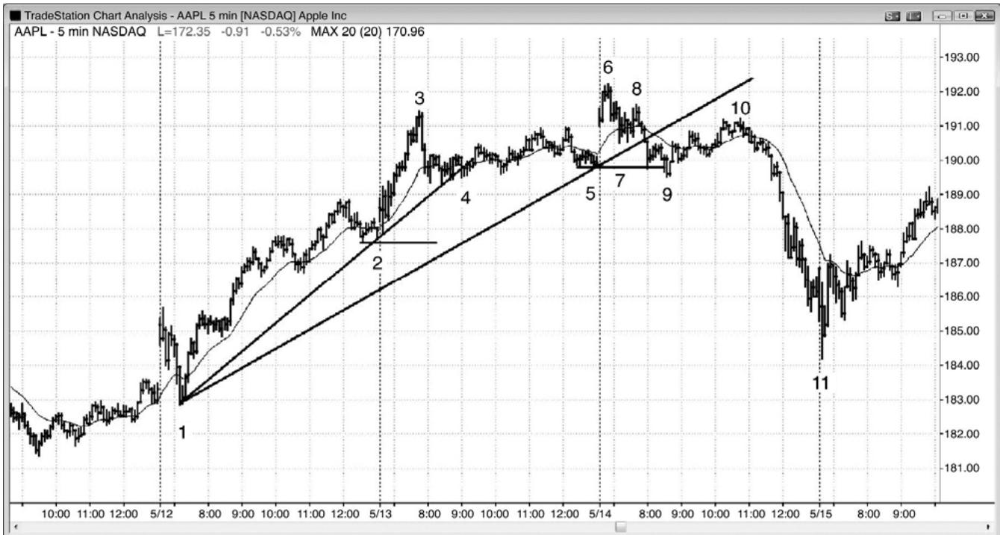
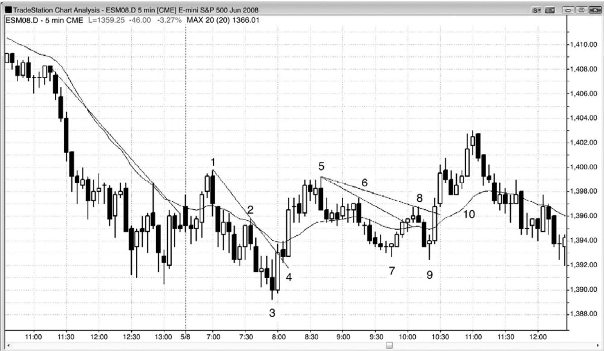
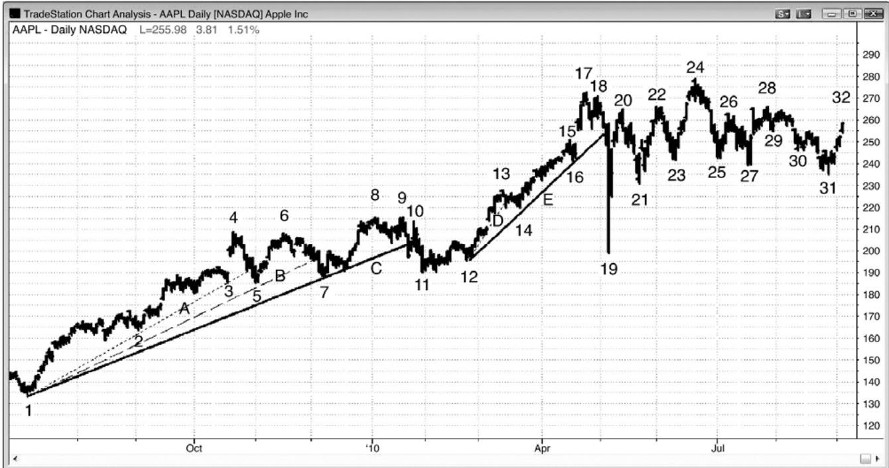
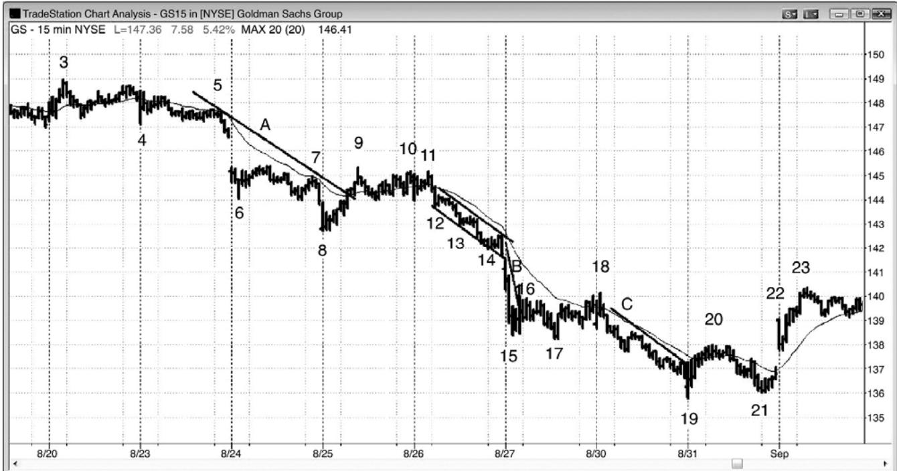
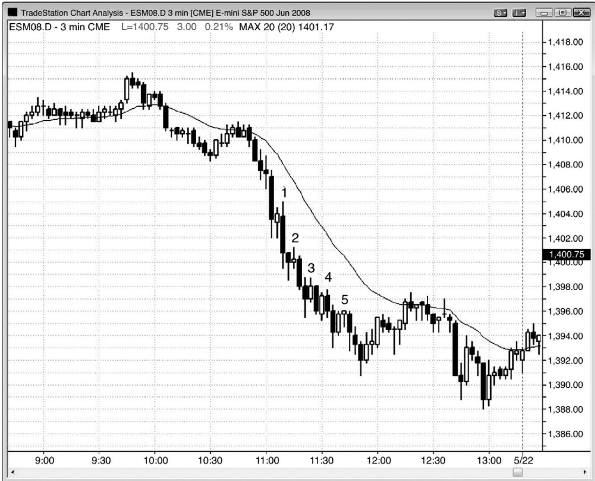
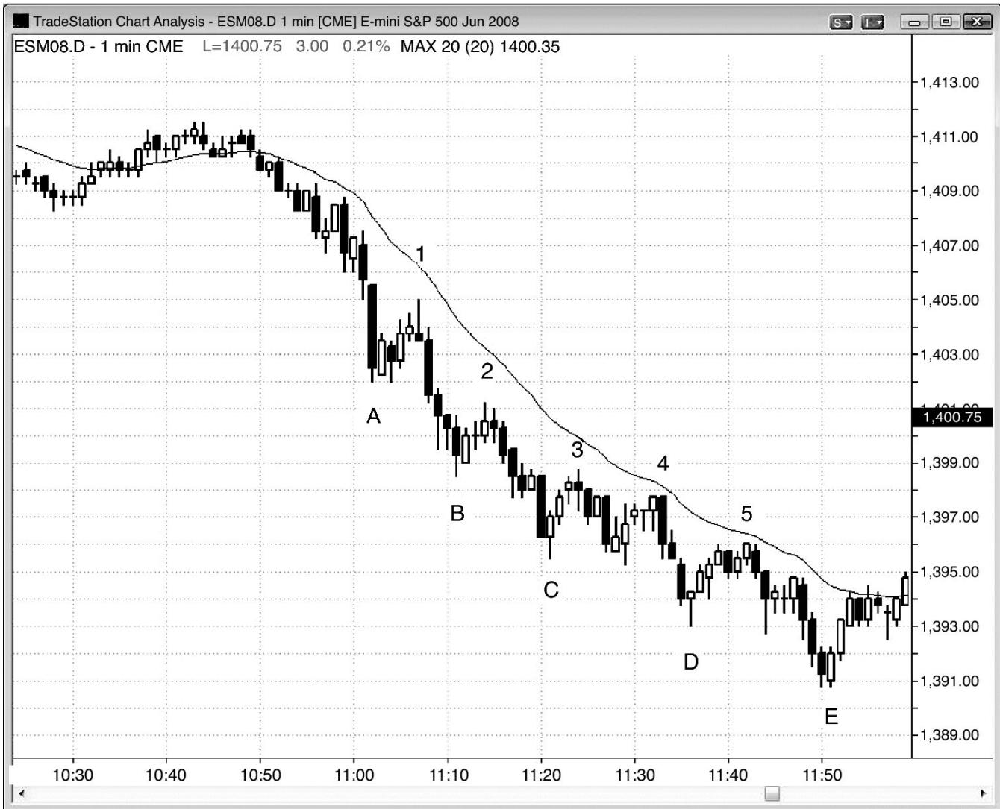
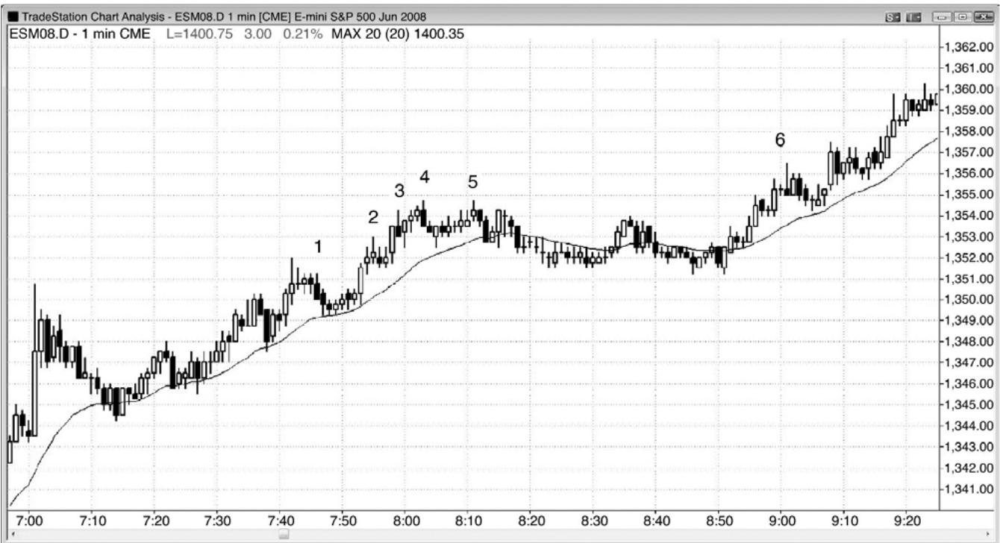
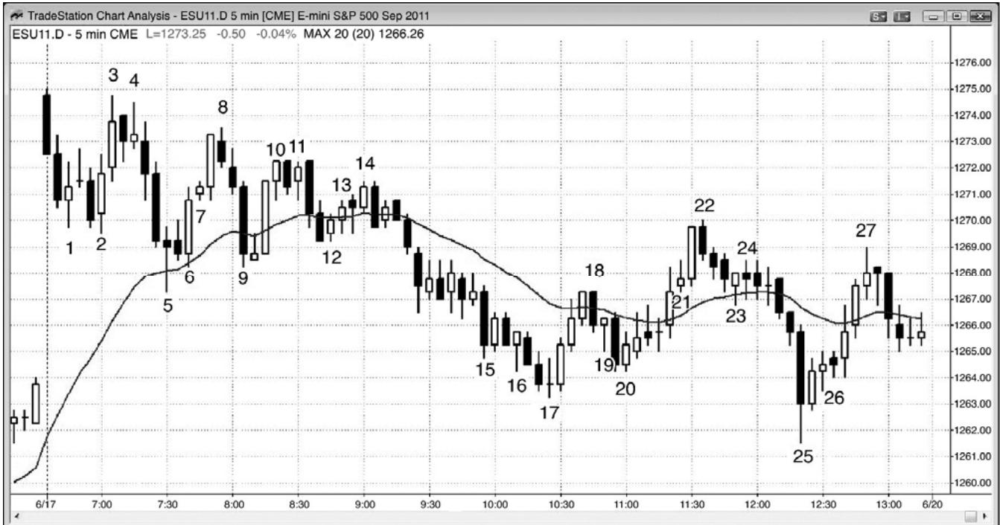

第3章 重要趋势反转¶
第 3 章 重要趋势反转
很多做长期投资的机构，把对多头趋势线的非常强的向下突破看作一个买进机会，因为他们知道，空头不断在尝试令趋势反转，但是 80%的时间都是失败的。即使空头尖峰巨大而强劲，跌至远低于趋势线和均线的价位，他们也会买进。他们希望自己的买进将会引领其他交易者买进。最低限度，他们预期市场反弹测试市场顶部下方的突破点。一旦到达那个突破点，他们将决定趋势是否已经反转。如果那样，他们将停止买进，而是退出他们的新多头，以及在上涨过程中买进的其他所有多头。他们的大部分头寸都是获利的，因为他们是很久以前买进的，远低于他们的最后一个入场点。不过，由于他们是在趋势继续上涨时买进的，所以他们在多头趋势的顶部买进一些头寸，当他们离场时将会有所亏损。 旦这些长期投资机构认为市场即将下跌，趋势就会反转，因为他们是先前在每个迅猛的下跌运动中买进的交易者，现在没有人在强空头尖峰中买进。他们将会等待，直到他们认为空头趋势已经抵达一个长期价值区域，那总是位于一个长期支撑区，比如月线图中的趋势线。一旦抵达那一区域，他们将再次积极买进，他们将在空头每一次试图延长空头趋势时买进。在某个点处，其他机构也看到支撑正在形成，他们也会买进。很快将形成强劲的多头尖峰，测试空头低点的回撤，然后反转进入一轮新的多头趋势。
每一个反转形态都是某种类型的交易区间，所以其中包含双向交易，直到逆势交易者们已经明确地获得控制权。对于不同的交易者来说，术语“重要趋势反转”的含义是不同的，有人可能确信地说趋势已经反转，直到运动已经至少包含足够的棒线，使总在场内头寸在大部分交易者眼中改变方向。然后，仅凭那一点并不足以使一个反转被称为“重要”。对于很多交易者来说，5 分钟图上每个可交易波段都会带来总在场内头寸的变化，也就是说，在大部分交易者里，总在场内头寸会在一天中改变很多次，尽管主要趋势通道保持不变。重要趋势反转意味着你面前的图表上有两轮趋势，两轮趋势中间有一个反转，可能是多头趋势已经反转进入空头趋势，也可能是空头趋势已经反转进入多头趋势。这种类型的反转不同于图表上很多向上和向下的反转，它们的运动幅度通常足以做一笔交易，但是并不足以改变重要趋势的方向。另外，无论屏幕上是否存在明显的趋势，那些微型反转都会发生。
对于大多数重要趋势反转来说，最早的信号通常拥有较低的成功率，但是会提供最大的回报，常常比风险大若干倍。开始，市场常常做横盘运动，形成很多回撤，但是，如果趋势实际上正在反转，那么新趋势不久就会非常明显。很多交易者喜欢等到趋势明朗时入场。这些交易者们宁肯只选择那些成功率至少为 60%的交易，他们情愿少赚一点（他们在运动已经开始后入场），就是为了获得较高的成功率。由于正常操作时两种方法都拥有正的交易者方程，所以两种方法都是合理的。
重要趋势反转需要四个条件：
-
你面前的图表上有一轮趋势。
-
逆势运动（反转）强到足以突破趋势线，通道也突破均线。
-
对趋势极点的测试，然后一个二次反转（在多头趋势的顶部，一个更高高点、一个双重顶、或一个更低高点，在空头趋势的底部，一个更低低点、一个双重底、或一个更高低点）。
-
二次反转运动的幅度足以令人们一致认为趋势已经反转。
首先，你面前的屏幕上已经有一轮趋势，然后一波逆势运动强到足以突破重要趋势的趋势线，如果趋势均线，那么就更有说服力。其次，趋势必须恢复，测试原来趋势的极点，然后，市场必须再次反转。举例说明，在一轮多头趋势中，当出现一波下破多头趋势线的强下跌运动后，交易者们将会关注下一波反弹。如果市场在原来的高点区域（一个更低高点、双重顶、或更高高点）再次向下反转，那么测试就已经成功，交易者们将开始推测趋势正在反转。最后，下跌运动必须足够强，以便使交易者们认为市场处于一轮空头趋势中。如果下跌运动表现为强空头尖峰的形式，强空头尖峰由很多连续的大型空头趋势棒构成，那么每个人将认为市场现在正处于一轮空头趋势中。然而，市场常常会在一条非常宽的通道内运动 50 棒或更多棒，没有足够明确的说服交易者们趋势真的已经向下反转。他们或许怀疑市场是否已经演变为一段交易区间，事实经常如此。如果没有非常强的空头尖峰，那么直到形成几十棒和一系列更低高点和低点时，人们才会一致认为趋势已经反转。此时，市场可能已经远低于原来的多头高点，空头趋势可能离结束不远了。
P60
对于反转的一致意见是否在市场已经实际反转后很久才形成，并没有关系，因为在下跌过程中存在交易机会。如果下跌运动是模糊的、双向的，那么交易者们就会像其他双向市场一样交易，在两个方向上寻找交易机会。如果形成一轮非常强的空头趋势，那么交易者们几乎只会选择做空。如果下跌过程中都存在交易，那么为什么交易者应该考虑重要趋势反转呢？那是因为，如果交易者能够及早在市场测试原来高点后向下反转时入场，那么交易者方程是非常棒的。虽然成功率只有 40%到 50%，但是回报常常比风险高很多倍，结果是一个非常有利的交易者方程。大部分反转引出交易区间，但是仍然有可能获利的交易。
实际上，所有重要趋势反转都是从趋势线突破或趋势通道线过冲并反转开始的，当出现反转时，最终都要突破趋势线。举例说明，如果多头市场在一个头肩顶中结束，那么从头部的下跌通常会向下突破整轮多头趋势的趋势线，而且总是会向下突破沿向上反弹形成头部的棒线的底部绘制的较短多头趋势线。当从头部开始的下跌到达从左肩开始的回撤区域时，多头买进，试图制造一个双重底多头旗形。很多在向头部的反弹超越左肩时做空的空头，在同一区域获利了结，以防市场进入交易区间，或者形成双重底多头旗形。空头把形成右肩的反弹看作一个更低高点突破回撤做空架构，并且做空。空头需要看到趋势线突破，然后才倍感自信地建立逆势头寸（在多头趋势中做空），因为它预示着趋势的突破和一个可能的重要趋势反转的开始。另外，在先前高点（头部）买进的多头，预期出现另一条上涨腿，持有头寸观察从头部开始的下跌运动的强弱。一旦他们看到它的强度足以跌破趋势线，他们就利用那一波反弹退出他们的多头头寸，小幅亏损。多头和空头的卖出致使市场下跌，形成更低高点（右肩）。一旦市场跌至颈线（经过形态底部所画的一条大致水平的趋势线，沿着从左肩、头部和最后的右肩开始的下跌运动的最低点绘制），多头和空头将会评估下跌运动的强弱。如果跌势强劲，那么空头就不再认为市场仍然处于交易区间内，只是以刮头皮交易退出他们的空头头寸。反之，他们将坚持持有自己的空头头寸，甚至进一步做空，预期出现重要趋势反转，特别是在颈线被突破时和突破后。多头将看到卖出的力量，在市场稳定前，不愿再次买进，他们预期至少在若干棒后，市场才会稳定，可能是在一波向下的测量运动之后。
相反地，如果从头部到颈线的下跌运动较弱，那么多头和空头就会在市场测试颈线时买进。多头将会买进，因为他们把整个形态看作多头趋势中的一段交易区间，因此只是一个大型的多头旗形。他们是在一个自己预期的多头旗形的底部买进，那里可能形成近似的三重底（颈线处的三次向上反转）。当市场向交易区间中部或顶部测试时，有些多头将会以刮头皮交易离场，而有些多头将会继续持有，寻找多头突破和上涨波段。空头将会买回他们的空头头寸，而且在到达更好的价位前不准备再次买进。他们希望反弹不会超越右肩，如果反弹真的未能超越右肩，与右肩形成一个双重顶，那么他们将再次做空，希望该形态成为一个拥有两个右肩的头肩顶，那是很常见的。如果市场向止突破右肩，那么他们将买回自己的空头头寸，并且在若干棒内不准备再次做空，他们认为整个形态已经演变为一个大型多头旗形，突破后很可能继续上涨，形成一波向上的测量运动。多头还会在市场向上突破右肩时买进，知道空头将会平掉他们的空头头寸，而且在若干棒内不准备再次做空。像空头一样，他们预期形成一波向上的测量运动，而且会在新的多头腿形成过程中继续买进。
对于双重顶或更高高点，上述分析同样正确。每当市场在迅猛下跌后回到先前高点区域时，在原来高点买进的多头就会因下跌而感到失望，利用反弹退出他们的多头头寸。这就意味着他们变成了卖家（他们抛出自己的多头头寸），而且在市场大幅下跌前，他们不会再次买进。由于再没有人在当前价位买进，而且多空双方都在卖出，所以市场下跌。
市场底部发生的情况是相同的。一旦出现一波反弹，强到足以向上突破空头趋势线（要么是整轮空头趋势的趋势线，要么是向头部下跌的下跌运动上方的趋势线），当市场跌破右肩时预期形成另一条下跌腿的空头，在底部已经做空，他们因反弹而感到失望，预期在向下测试后最低形成另一条上涨腿。交易者们将把下一条下跌腿看作对空头趋势强弱的测试。如果空头趋势很强，那么市场最后将向下突破原来的低点（头部），持续很多棒，形成另一条下跌腿。如果趋势正在反转，那么激进型多头将会在原来低点附近买进，在原来低点做空的空头将会因从头部开始的强势反弹和测试空头低点的疲弱下跌而感到失望，于是他们利用这次短暂的下探在盈亏平衡点买回他们的空头头寸。由于多头和空头都在买进，而且空头不愿在这一价位附近再次做空，所以市场将会上涨。这次测试可能与原来的空头低点、更高低点、或更低低点形成一个完美的双重底。那都没有关系，因为它们都是同一过程的表现。如果它形成一个更高低点，那么有些交易者将把它看作一个头肩底的右肩，并且寻找一个合理的左肩。如果他们真的找到一个，那么他们将更加自信地认为这是一个趋势反转，因为他们认为很多交易者将会识别出那一形态，并且开始买进。不过，对于大多数交易者来说，无论是否有清晰的左右都没有关系。重要的是出现对空头趋势线的很强的向上突破，对空头低点的测试，然后是向上反转进入一个多头波段或一轮多头趋势。
P61
无论顶部是来自一个更高高点、一个完美的双重顶、还量一个更低高点，都没有关系，因为它们都代表着相同的行为。市场正在测试原来的高点，看是否主要是买家和多头反转，还是主要是卖家和空头反转。向顶部有两次上推：第一次是原来的多头高点，第二次是在市场跌破多头趋势线后对那个高点的测试。市场并不在意那个双重顶有多么完美；无论外观怎样，所以测试都应被看作双重顶的变种。市场底部的情况是相同的。出现一个市场低点，然后一波反弹，通常足以强到向上突破空头趋势线。那个低点是双重底的第一个底部。在市场向上突破空头趋势线（因此突破了空头通道）后，再次下跌测试第一个底部，当市场向上反转时，这个低点便是双重底的第二个底部，无论它是高于、低于第一个底部，还是与第一个底部处于同一价位。
传统双重顶和双重底与它们在较高时间框架图表上的微型版本的关系，对于所有微型形态来说都是相同的。举例说明，如果交易者在一张 5 分钟图上看到一个双重底，然后观察一张较高时间框架图表，那么那两个底将只是两三条分开的棒线，形成一个微型双重底。类似地，如果交易者观察 5 分钟图上的一个微型双重底，那两个底只是两三条分离的棒线，那么这个底部形态将是足够小的时间框架图表上的一个完美的趋势反转，在那张较小的时间框架图表上，第一个底部之后的反弹向上突破空头趋势线，第二个底部是测试。实际上，每张图表上大多数可交易的反转，甚至是小型刮头皮，都是从微型双重底或双重顶开始的，而且除非形成一个双重底或双重顶，否则大部分交易者不会做反转交易。微型双重顶是多头趋势中一个失败的突破，所以可能是一个失败的高点 1、高点 2 或三角形买进信号，失败的双重底是失败的低点 1、低点 2 或三角形卖出信号。这就意味着这些反转是小型最终旗形反转（在第 7 章讨论）。实际上，最终旗形是双重顶或双重底的一个变种。举例说明，如果交易区间日中出现一波两条腿反弹，然后市场形成一个 ii 形态，那么就是在提醒交易者可能形成最终旗形突破和向下反转。ii形态之前形成的尖峰是第一次上推，小型多头突破是第二次上推。由于那是两次上推，所以它只是双重顶的一个变种，尽管（两个）高点不在同一价位。
预期向下反转的交易者们，会在信号棒的高点及其上方做空，预期突破将成为最终多头旗形。当它是一个微型形态时，他们用来做空的限价单将设在信号棒的高点及略高于高点处。当它是一个较大的形态时，它将是较高时间框架图表上的一个微型形态，有些交易者会把他们的限价单设在较高时间框架信号棒的（译者加：高点）及其上方。另外的交易者，可能是很多机构，会在市场从他们所认为的最终多头旗形突破而出的过程中逐步做空。在市场底部，如果他们预期双重底或微型双重底将成为空头腿的最终旗形，引起向上反转，那么他们的做法刚好相反。
记住，所有趋势都是在通道之内，直到出现对通道的强势突破，最好的做法是在与超越均线的突破尝试相反的方向上交易。直到出现超越均线的强势突破，大部分交易者将把任何逆势交易只看作刮头皮。在没有趋势线突破的情况下，仍然有强趋势在起作用，交易者们应该确保自己选择每一个顺势入场，而且不必担心错过一个偶尔出现的逆势刮头皮机会。最高的胜算和最高的回报都在顺势交易中。在没有趋势通道线过冲和反转的情况下，真正的 V 形底非常罕见，所以不值得考虑。交易者们应该把注意力集中在常见形态上，如果他们错过一个偶然的稀缺事件，那么总会出现回撤，可以让他们开始在新趋势中交易。
趋势线突破并没有令趋势反转。它只是逆势交易者们正变得足够强大，你应该很快开始在他们的方向上交易的第一个明显的征兆。不过，你首先应该继续做顺势交易，因为趋势线突破后，市场将会测试原来趋势的极点。那种测试可能在原来的极点处略微过冲或欠冲。仅当在测试期间形成反转架构时，你才应该做逆势交易。如果真的形成反转架构，那么逆势运动应该至少形成两条腿，甚至可能形成一轮新的反向趋势。
在多头趋势中，超越前一高点的一波运动通常会引出三种结果：更多买进、获利了结和做空。当趋势强劲时，强势多头将会通过在市场向上突破原有高点时买进而推动他们的多头头寸，接下来将会形成一波某种类型的上涨测量运动。如果市场在突破后的上涨幅度足够大，在回撤前能够让交易者至少可以做一笔刮头皮交易时，那么就可以认为基本上都是新的买家在高点处买进。如果市场横盘，那么就认为存在获利了结，多头正准备在小幅下挫后再次买进。如果市场向下猛烈反转，那么就认为强势空头主宰新的高点，市场很可能出现至少一两条腿的下跌，至少持续 10 棒。
有些交易者喜欢在趋势反转的最早信号出现时入场，比如在通道被突破时。不过，这是一种低胜率型的交易。是的，较大的回报能够补偿风险和低成功率，但是大部分交易者结果会过分挑剔，总是告诉自己挑选最好交易。像所有突破一样，通常最好等等看突破有多强。如果突破很强，那么就准备在回撤时入场。这种思想适用于所有趋势反转，甚至小型趋势的反转，比如较大趋势中的回撤、微型通道、尖峰后的通道、以及宽幅通道内的趋势。如果逆势突破较弱，那么就准备在反转尝试失败时在趋势方向上入场。如果突破非常强，若干棒之内没有出现回撤，那么就把它当作任何强势突破一样看待，在市价或小幅回撤入场新趋势，我们在第二本书中的第一部分讨论过。
P62
如果没有稀缺、轰动的新闻事件，那么交易者们不会从极端看涨突然转变为极端看跌。中间有一个逐渐转变的过程。交易者变得不大看涨，然后中立，然后看跌。一旦有足够的交易者完成这种转变，那么市场就会反转进入更深的调整，或者进入一轮空头趋势。对于何为过度，每家公司都有自己的标准，在某个时间点，将有足够多的公司决定趋势已经走得太远。他们认为，停止在原有高点上方买进，几乎已经不会有错过大的上涨运动的风险，于是他们仅在回撤买进。如果市场在原来的高点上方犹豫不决，那么就变成了双向市场，强势多头正在利用新的高点获利了结。
获利了结意味着交易者们依然看涨，正准备在回撤买进。大多数新高之后都会伴随着获利了结行为。每个新高都可能是一个顶部，但是大多数反转尝试失败，成为多头旗形的起点，接下来又形成一个新高。在上涨腿中，如果向上测试高点的反弹中包含几个小幅回撤，而且上涨腿中出现大量重叠棒、几条空头棒、棒线的上尾线很长，而且大多数多头趋势棒都较弱，那么市场的双向性正变得越来越强。多方正在棒线顶部获利了结，仅在棒线底部买进，空方开始在棒线顶部做空。类似地，当市场靠近多头趋势顶部时，多方正在获利了结，空方则会加大做空力度。如果市场超越多头高点，那么获利了结和做空很可能会更强烈，于是会形成交易区间或反转。
大多数交易者不喜欢反转，因此，如果他们预期反转信号出现，那么他们宁可退出多头头寸，然后等待那个信号出现。这些多头在趋势中最后一条上涨腿上的缺席，使得向最后高点的上涨更加疲弱。如果在市场向上突破前一高点后出现很强的向下反转，那么强势空头正在控制市场，至少在近期内控制市场。一旦那种情况发生，原本希望在小幅回撤买进的多头，反过来认为市场将进一步下跌。因此，他们等待较大幅度的回撤出现后才会考虑买进，他们的买进的缺乏允许空方驱动市场下跌至一个更深的回调，持续10多棒，常常包括两条腿或多条腿。
有一种情况下，多头趋势中的突破常常会遭遇即将接管市场的激进的空头。回撤是反方向的微型趋势，交易者们预期它很快结束，较大的趋势将会恢复。当强空头趋势中出现一波回撤时，市场常常会在微型多头趋势中形成两条上涨腿。当市场超越第一条上涨腿的高点时，它就是向上突破了微型多头趋势中的前一个波段高点。但是，由于大多数交易者把那波上涨运动看作不久便会结束的回撤，所以回撤的主要交易者通常是激进的卖家，而不是激进的新买家或获利了结的多头，在向上突破回撤中的第一个或第二个波段高点后，微型多头趋势通常会反转下跌，回到主要空头趋势的方向。
对于空头趋势中的新的低点，上述情况也是正确的。当空头趋势很强时，强势空头将会通过在突破至新低时加仓来推动他们的头寸，市场将继续下跌，直至到达某个测量运动目标。随着趋势变弱，新低处的价格行为将变得不那么清晰，也就是说强势空头正在利用新低作为获利了结空头头寸的区域，而不是作为加仓的区域。当空头趋势进一步失去力量时，最后强势多头将把新低看作新建多头的很棒的价位，他们将有能力制造一个反转形态，然后是一波明显的反弹。
当趋势成熟时，它通常会转变为交易区间，但是在第一个交易区间之后，通常会延续原来的趋势。当趋势成熟时，强势多头和强势空头是怎样操作的呢？在多头趋势中，当趋势强劲时，回撤幅度很小，因为强势多头希望在回撤时买进更多。因为他们怀疑在市场涨得更高前可能不会出现回撤，所以他们开始分批持续买进。他们寻找任意理由买进，市场中有那么多大型玩家，对于每一种能够想像得到的理由，都会有一些买进操作。他们利用限价单在下跌几个跳动后买进，在前一棒低点上方几个跳动处买进，在前一棒低点及其下方买进。他们利用止损单在前一棒高点上方、以及对先前任意波段高点的向上突破买进。他们还会在任意多头或空头趋势棒的收盘买进。他们把空头趋势棒看作在更好价位买进的一个短暂机会，把多头趋势棒看作市场即将快速上涨的征兆。
强势空头非常聪明，他们明白市场中正在发生什么事情。因为他们相信——就像强势多头一样——市场不久便会涨得更高，所以对于他们来说，做空是没有道理的。他们只是在一旁等待，直到他们能够在更高的价位卖空。那么要涨多么高呢？每家机构都有自己的衡量标准，但是一旦市场到达某个价位，在那里有足够多的空头公司认为它可能不会继续走高，那么他们将开始做空。如果有足够多的公司在同一价位附近做空，那么将会形成更多、更大的空头趋势棒，而且棒线开始出现上尾线。这些都是卖压的征兆，它们告诉所有交易者多方正变得越来越弱，空方正变得越来越强。强势多头终于在最后一个波段高点上方停止买进，随着市场上涨至新的高点而开始获利了结。他们仍然看涨，但是变得非常挑剔，只在回撤买进。随着双向交易增加，抛盘拥有越来越多的空头趋势棒，而且持续时间越来越长，强势多头将只希望在正在形成的交易区间的底部买进，同时准备在顶部获利了结。强势空头开始在新高处做空，他们现在愿意随着市场上涨而逐渐加仓。如果他们认为市场可能向上反转，并且突破至一个新高，那么他们可能会在正在形成的交易区间的底部附近部分获利了结，但是他们时刻准备在新的高点做空。在某个点处，市场变为 50-50 市场，多空双方都未能控制市场；最后，空方变为主宰，空头趋势开始，相反的过程展开。
P63
一轮延长的趋势常常拥有异常强劲的突破，但是那个突破可能是一个耗尽型的高潮。举例说明，在一轮延长的多头趋势中，所有的强势多头和空头都喜欢看到一两条大阳线，如果异常大的话更好，因为他们预期那是一个短暂的、不同寻常的大机会。一旦市场接近强势多头和空头都想要卖出的某个价位，比如接近测量运动目标或趋势通道线，特别地，如果那一波运动是第二个或第三个连续的买进高潮，那么他们就走到一旁观望。缺少了来自最强交易者们的卖出，使得市场上方产生一个真空，真空效应将制造一两条相当大的多头趋势棒。这一多头尖峰就是强势交易者正在等待的征兆，一旦多头尖峰出现，他们就像是突然从某个地在突破失败上。双方都在那一棒的收盘价、最高价上方、下一棒收盘价（特别地，如果它是较弱的一棒）、以及接下来一棒的收盘价处积极卖出，如果棒线开始出现空头实体，那么他们的卖出就更加积极。他们还会在前一棒的低点下方做空。当他们看到一条强空头趋势棒时，他们会在它的收盘价和低点下方做空。多空双方都预期出现较大调整，直到一波包含至少 10棒和两条腿的调整完成后，多方才考虑再次买进，即便那时，也仅在抛盘看起来疲弱时买进。空方预期出现同样的抛盘，不再迫切希望过早获利了结。
弱势交易者们对那条大型多头趋势棒的看法刚好相反。刚刚在一旁等待、希望在回撤时买进的弱势多头，看到市场快速离他们远去，希望确保抓住下一条上涨腿，特别是当那一棒非常强，当天交易几近结束时。早先做空、可能已逐渐加仓的弱势空头，看到那一棒迅速突破至一个新的高点而感到恐慌。他们害怕持续的坚持到底买进，于是他们买回自己的空头头寸。这些弱势交易者是依靠情绪交易的，正在与（机构的）电脑相抗衡，而电脑的算法中没有情绪这一变量。由于是电脑控制市场，所以弱势交易者们的情绪，注定让他们在一轮过度的多头趋势终点的大型多头趋势棒上大幅亏损。市场正在反转，没有成功突破。
一旦强劲的多头趋势开始出现相对较大的回撤，那些回撤（总是小型交易区间）的行为就越像是交易区间，而非多头旗形。突破的方向变得不那么确定，交易者们开始认为向上突破的可能性与向下突破的可能性一般大。现在，新的高点是在尝试向上突破交易区间，几率偏向于它将失败。类似地，一旦强空头趋势中开始出现相对较大的回撤，那么那些回撤的行为就更像是交易区间，而非空头旗形；因此，新的低点是在尝试向下突破一段交易区间，几率偏向于它将失败，交易区间将会继续。
每一段交易区间要么位于多头趋势内，要么位于空头趋势内。一旦双向交易强到足以产生交易区间，那么趋势就不再强劲，至少在交易区间起作用的时间内不再强劲。市场最终总会从区间中突破而出，如果是向上突破，而且突破之势很强，那么市场就是处于强劲的多头趋势中。如果是向下突破而且很强，那么市场就是处于强劲的空头趋势中。
一旦空方强到足以推动市场大幅回撤至多头趋势线和均线下方，那么他们便有足够的信心认为市场很可能不会继续走高，于是他们将在原来高点上方积极做空。在这一点，多方将已决定他们仅应在较深回撤时买进。在新的高点处，新的思维定式现在处于主导地位。它不再是一个买进的位置，因为它不再代表着多少力量。是的，那里有多头在获利了结，但是大部分大型玩家现在把那个新的高点看作新建空头的大好机会。市场已经到达引爆点，大部分交易者已经不再准备在小幅回撤买进，相反地，他们正准备在反弹时做空。空方成了主宰，强劲的卖压很可能会引起一波大的调整，甚至是趋势反转。在下一波强势下推之后，空头将寻找更低的高点再次做空或加大他们的空头头寸，之前在回撤买进的多头将变得担心趋势可能已经反转，或者至少将出现更大幅度的回撤。他们不再寄希望于在新的多头高点处将自己的多头头寸获利了结，而是打算在更低的高点处获利了结，而且在较大调整结束之前，他们不会考虑再次买进。多方知道大多数反转尝试失败，很多骑着趋势上涨的多头，直到空方已经展示出推动市场猛烈下跌的能力之后，他们才退出自己的多头头寸。一旦这些多头看到这种令人印象深刻的卖压，他们将寻找一波反弹最后退出他们的多头头寸。他们的供给将限制上涨，他们的卖出，加上激进空头的做空，以及把之前抛盘看作买进机会的多头的获利了结，将产生第二条下跌腿。
如果市场进入空头趋势，那么上述过程将会反转。当空头趋势很强时，交易者们将会在先前的低点下方做空。随着趋势渐弱，空方将在新低处获利了结，市场很可能进入交易区间。在市场向上强势突破空头趋势线和均线之后（译注：原文直译为在市场向上强势突破多头趋势线和均线之后，疑为原作者笔误），空方将在新低处获利了结，强势多头将积极买进，并设法控制市场。结果将产生更大的空头反弹，或者可能反转进入多头趋势。
当回撤大到足以让交易者们怀疑趋势是否已经反转时，便会出现类似的情形。举例说明，如果多头趋势中出现一波幅度深、速度快的回撤，那么交易者们将开始认为市场可能已经反转。他们观察先前波段低点下方的运动，但这是在多头趋势的回撤中，而不是在空头趋势中。当市场跌至先前某个波段低点下方时，他们将观察发生了什么。对于在那个波段低点下方利用卖出止损单入场的空头来说，市场的跌幅会大到让他们获利吗？在新的低点处，卖家将会多于买家吗？如果是的话，那就是空方势强的征兆，回撤幅度可能会进一步加大。趋势甚至可能已经向下反转。
P64
突破至新低后的另一种可能性是市场进入交易区间，表明空方在获利了结，多方的买进较为平淡。最后一种可能出现的情况是市场在突破至新低后向上反转。这就意味着在那个波段低点下方刚好有强势多头在等待市场测试那一价位。这就表明先前的抛盘很可能只是正在行进中的多头趋势中的一个大的回撤。在上方较高价位入场的空头，在市场突破至新低时获利了结，因为他们认为趋势仍然是向上的。强势多头积极买进，因为他们认为市场不会进一步下跌，而是向上反弹测试多头高点。
每当出现跌破波段低点的突破时，交易者们将仔细寻找证据，研判多方已经返回，还是空方已经取得控制权。他们需要决定在新低处谁的影响最大，他们利用市场行为作出决定。如果出现强势突破，那么新的卖压便是主宰。如果市场的运动不确定，那么空方的获利了结和多头的弱势买进正在发生，市场很可能会进入交易区间。如果出现很强的向上反转，那么多头的持续买进便是最重要的因素。
强趋势通道线反转是来自极度延长的趋势，在反转穿过通道至另一侧并突破趋势线后，常常会继续大幅运动。反转后的第一波回撤常常比较浅，因为市场是情绪化的，每个人都很快同意趋势已经反转。由于这种自信，交易者们将变得更加激进，在最短的暂停期间加仓，而不是获得了结，从而使得回撤幅度很小。
当出现很强的趋势线突破时，通常会在回撤后形成第二条腿。回撤常常回溯并测试原来的趋势线，但是几乎总是会出现可为可靠的价格行为理由，让你在那里入场，尝试捕捉回撤或新趋势的第二条腿。穿过趋势线的运动越强，回撤之后就越有可能形成第二条腿。如果趋势线突破甚至没有强到抵达均线，那么通常不会强到令趋势反转，所以仍然不要寻找趋势反转。虽然出现了趋势线突破，但是趋势仍然强劲，你只应选择顺势架构。
趋势以反转结束，反转是一波突破趋势线的逆势运动，然后是对最后一个趋势极点的测试。对原来极点的测试可能过冲，在新的多头趋势中形成一个更低低点，或者在新的空头趋势中形成一个更高高点，也可能欠冲，在新的多头趋势中形成一个更高低点，或者在新的空头趋势中形成一个更低高点。比较少见的情况下，测试将形成一个完美的双重顶或双重底。严格来讲，过冲是原来趋势的最后一条腿，因为它们形成趋势中最极端的价格。欠冲是新趋势中从第一条腿开始的回撤。测试本身常常由两条腿构成（举例说明，比如空头突破之后的两条腿反弹）。
如果过冲的幅度太大，而且处于一条太过紧凑的通道内，那么你不应寻找反转。趋势很可能已经恢复，而不是处于反转过程中。相反地，反转过程结束，等待另一个趋势线突破，然后另一个对趋势极点的测试，然后再寻找反转交易。
对趋势极点的测试通常表现为某种类型的通道，当市场可能处于反转过程中时，通道的强弱特别重要。举例说明，如果有一轮强劲的多头趋势，然后是一波剧烈抛盘大幅跌破多头趋势线，那么交易者们将仔细分析下一波反弹。他们希望知道那一波反弹只是对多头高点的测试，还是会强势突破那一高点，然后形成多头趋势中的另一条强势上涨腿。最重要的考虑因素之一是对多头高点的测试的动能。如果反弹是在一条非常紧凑、没有回撤的陡峭通道内，相邻棒线之间几乎没有重叠，而且反弹在出现暂停或回撤前已经远高于多头高点，那么表明动能很强，多头趋势恢复的几率增加，尽管前面出现过强势抛盘和对多头趋势线的向下突破。反之，如果反弹过程中出现很多重叠棒线、几条大型空头趋势棒、两三个清晰的回撤，或许外形是一个楔形，斜率明显低于原多头趋势和抛盘的斜率，那么市场在测试多头高点后很可能形成一个更低高点或略高的高点，然后再次尝试下跌。市场可能正在反转进入一轮空头趋势，最低限度很可能形成交易区间。
市场具有惯性，一般会继续做刚刚在做的事情。这使得大多数趋势反转失败。另外，当某个趋势反转尝试成功令市场反转时，很可能形成交易区间，而不是反向趋势，由于交易区间代表着较少的变化。在交易区间内，原来趋势中的交易者们仍然很强，但是受到反向交易者们的中和。这比市场控制权从一组趋势交易者手中快速转到反向趋势交易者手中更加可能。不过，即使进入交易区间，市场通常也会形成大型的、可交易的逆势波段，而且在交易者们知道市场是已经反转进入反向趋势、还是已经形成一个当前趋势中的大型旗形之前，它可能已经运动了几十棒。
由于趋势线突破后的逆势运动通常至少包含两条腿，所以，如果一个多头反转已经在测试空头低点时形成一个更高低点，那么它也是第二条腿的起点。然而，如果它在测试时形成一个更低低点，那么，那个低点将是第一条腿的起点；第一条腿之后，很可能出现回撤，然后是第二条腿。类似地，在一个空头反转中，更低高点是第二条腿的起点，但是更高高点测试是第一条腿的起点。
P65
一切都与你面前的图表相对应，在更高或更低时间框架上，一切都看起来不一样。如果离开趋势线、测试趋势极点的腿形在 5 分钟图上只有两棒，那么交易者们不会把它看作一个重要的趋势反转，尽管那些腿形在 1 分钟图上大约有 10 棒，能够形成一个极好的重要趋势反转架构。类似地，如果一轮持续了 60 棒的多头趋势出现一波回撤和一个测试，测试腿形拥有20 棒或更多棒，那么可能在 15 分钟图上形成一个重要的趋势反转架构，但是，当 5 分钟图上出现包含那么多棒的腿形时，交易者们不会使用术语“重要趋势反转”。相反地，他们会寻找其他形态。举例说明，如果突破一条多头趋势线的回撤包含 30 棒，那么交易者们会把它看作一轮空头趋势（多头趋势中的所有回撤都是较小的空头趋势），将会寻找对空头趋势线的向上突破，以及接下来向上的重要趋势反转。如果反弹也包含大约 30 棒，那么他们会把它看作一轮新的多头趋势，寻找对它的趋势线的向下突破，以及向下的重要趋势反转。他们认识到，这些腿形在 15 分钟图上只有 10 棒，并且在 15 分钟图上形成一个重要趋势反转，但那不是在你交易的图表上，他们将使用恰当的术语来描述眼前图表上的形态。
一个普通架构大约有 40%的机会引出一个可获利波段，有 30%的机会引起小幅亏损，有30%的机会引起小幅获利。大部分架构的结局都是交易区间，而不是反向趋势，但是仍然有70%的机会至少小幅获利。最好的架构有 60%的机会产生可获利的波段交易。
图 3.1 更高高点之后出现一个更低高点

图3.1中有一个重要的趋势反转，很有很多重要反转的例子在本书其他图表中给出。
在多头趋势线突破之后，如果趋势在一个更高高点处向下反转（重要的向下趋势反转），那么通常会有一个更低高点重要趋势反转，给交易者们二次做空的机会。AAPL 中既出现一个更高高点趋势反转，也出现一个更低高点趋势反转。重要反转通常出现于对趋势线的强势突破之后，显然反向交易者们变得越来越强。截止棒4的疲弱的空头腿突破了趋势线，它并没有继续向多头趋势中最后 个更高低点（棒2）靠近。它甚至未能一直保持在均线下方。不过，它继续横盘了很多棒，表明空头的力量足以使多头趋势停止很长时间。
在这一趋势线突破之后，棒6是一个更高高点做空架构，但是，由于截止棒4的下跌不是特别强，所以市场跌至棒9便停止了。
棒9成为一个楔形多头旗形或一条多头通道的底部，是一个高点4买进架构，它与棒5形成一个双重底多头旗形。这引起一波反弹，至棒 10 结束。截止棒 10 的上涨是一个低动能、低点 4 做空架构，也是一个楔形空头旗形，第一次上推是棒 9 低点前面紧邻的那个更低高点。它也是一个头肩顶的右肩，但是大多数头肩顶失败，成为三角形或楔形多头旗形。不过在这个例子中，它成为趋势线突破后的第一个更低高点，也是对多头高点的一个更低高点测试。
截止棒 9 的空头腿明确地向下突破了一条较长的趋势线、均线、以及多头趋势的最后一个更高低点（棒 5），而且此前在趋势反转处出现过一次迅猛的（反转）尝试（截止棒 4 的抛盘）。另外，它没有去进一步测试那条多头趋势线的下侧，或者第一条下跌腿中的第一次回撤棒 8。所有这些都是趋势线突破强劲的征兆，增加了至少出现一条下跌腿或者实际趋势反转的几率。在多头趋势的顶部棒 6 买进的多头，看到空头在截止棒 9 的抛盘中的强势，以及多头在截止棒 10 的反弹中的弱势，对那种价格行为感到失望。他们把截止棒 10 的弱势反弹作为一个小幅亏损离场的机会，在市场下跌前，他们不愿再次买进。多头希望在买进前看到强势征兆，但是没有出现，于是在市场跌至棒11的过程中，他们坐在连线上观望。
P66
在向那个更低高点反弹的过程中，有些交易者喜欢看到一个 61.8%的斐波那契折返位。然而，61.8%折返永远不是一个使人相信的数字，它的可信度与60%、63%或67%回撤没有什么区别，当交易已经变得如此计算机化时，它可能已经失去了价值。举例说明，如果交易者认为市场处于空头波段中，他正在 50%回撤处卖出做空，那么他所承担的风险是市场到达一个新高（超越棒 6），回报是市场测试空头尖峰的底部棒 9。他的回报等于他的风险，而且由于他把那次反弹看作一波回撤，所以他的空头交易至少有 60%的成功率。如果市场折返至更高价位，那么就有证据表明 67%折返比 61.8%折返更重要。一旦回撤上涨超过 50%，那么空头趋势恢复的几率降低，比如说变成50%。一旦胜率为50%或更低，那么如果交易者打算做空的话，他就需要更多的回报。由于他的止损位于棒 6 高点上方，所以它可能希望回报为风险的两倍。这就意味着他可能会在 67%折返位做空，因为那样对棒 9 低点的测试所产生的回报将是风险的两倍。
图 3.2 更低低点之后出现一个更高低点

电子迷你中形成一个更低低点重要趋势反转，然后又形成一个更高低点重要趋势反转（见图 3.2）。截止棒 1 的反弹突破了一条空头趋势线，棒 3 在测试空头低点时形成一个更低低点。更低低点测试的结果通常是至少引出两条逆势腿，此处便是那样（从棒 3 和棒 9 开始的上涨运动）。棒 9 是突破昨日重要空头趋势线（由截止棒 1 的反弹突破）后的一个更高低点，作为一个更高低点，它是第二条腿的起点，完整的第二条腿可能是上涨运动的结束。交易区间比进入反向趋势的反转更为常见。
截止棒 7 的下降通道（从棒 5 和棒 6）很强。很多交易者在买进前喜欢等等看突破有多强。棒 7 后面两棒拥有相对较大的实体和较短的尾线，在很多交易者眼中，它们代表着强势突破。在那一点，很多交易者们认为市场已经变为总在场内多头，等待在回撤买进。棒 8 后面的空头棒是尝试令对截止棒 7 的高点 2 多头旗形的突破失败（第一条下跌腿结束于棒 5 后面三棒）。空头希望棒 6 和棒 8 双重顶引出一个下跌波段。多头预期空头失败，交易者们在对棒 7 低点测试时入场买进，在截止棒 5 的强多头尖峰之后制造一个更高低点（棒 4 和棒 3 后一棒足以强到令交易者们认为很可能至少形成第二条上涨腿）。棒9是一个更低低点突破回撤买进架构（与棒 7 构成一个双重底多头旗形），多头在那里积极买进。
棒 9 后面的多头趋势棒反转了先前很多棒的高点和收盘价，那是一种强多头反转的征兆。它的收盘价超越了棒 6 以来每一棒的收盘价，它的最高价超越了棒 6 后一棒以来每一棒的最高价。强多头棒反转的最高价和收盘价越多，多头反转就越强，就越可能出现坚持到底买进
（更高的价格）。
重要趋势反转中最早的入场常常看起来不强，比如棒 3 和棒 9。也就意味着成功率常常不到 50%。然而，潜在回报是最大的，结果通常会得到一个正的交易者方程。在买进之前，交易者们可能会等待明确的总在场内多头反转，这通常会使成功率提高至 60%或更高。在那一点，只剩下较小的利润，而且风险通常会更高（保护性止损更远），但是交易者方程通常仍然为正。举例说明，多头可能会等待在棒 3 后面的多头趋势棒上方买进，预期形成（上涨）波段，也可能会在棒 4 的收盘买进，预期做一笔刮头皮交易。他们还可能会在棒 9 后面的多头趋势棒的收盘，或者在那一棒后面的多头趋势棒的收盘买进。
P67
这是一个常见重要趋势反转尝试的很好示例，其中的架构和背景都可以接受，但是并不强，向上反转引出一段交易区间，而不是一轮多头趋势，大约 70%的时间里都是如此。棒 3更低低点引出对棒 1 高点的测试，棒 1 高点很可能是一段正在演变的交易区间的顶部。有些交易者在那里全部或部分获利，而有些交易者则继续持有，预期形成第二条上涨腿，在棒10对交易区间的失败突破（当空头棒向下反转时，或者在其低点下方）离场。棒 3 更低低点为在棒 5 向下反转时离场的交易者们产生了一笔刮头皮交易的利润，为在棒 10 后面的向下反转中离场的交易者们产生了一笔波段交易的利润（回报至少为风险的两倍）。在棒7两条腿更高低点买进的交易者，如果坚持持有直到保护性止损被击中，那么他们将小幅亏损，如果他们在棒线上方的四棒反弹之后把保护性止损移至盈亏平衡点，那么他们将在差不多盈亏平衡的情况下离场。在棒 9 双重底更高低点（比棒 3 高）买进的交易者，能够部分或全部离场，回报至少为风险的两倍（一笔波段交易的利润），对于从棒 5 到棒 7 的小型空头趋势（多头旗形），棒 9 也是一个更低低点。
在像这样的普通架构中，波段交易获利的几率约为 40%，小幅获利的几率约为 30%，保护性止损被击中（小幅亏损）的几率为 30%。结果仍然是一种可以盈利的策略。在最强的架构中，波段交易获利的几率是 60%或更高，保护性止损被击中、引起小幅亏损的几率可能只有30%到40%。因为交易者方程非常强，所以这对于所有交易者来说都是一个极好的架构，也包括初学者。
图 3.3 单单趋势线突破不会产生反转

仅仅因为市场突破一条多头趋势线，然后运动至一个更高高点，并不足以成为做空的理由。如果出现一个趋势线突破，但是向更高高点的运动在原来多头高点上方又运动了 5 棒或更多棒，那么交易者们通常应该从头开始，等待另一个对多头趋势线的向下突破，以及对多头趋势高点的另一次测试，然后才可做空。如图 3.3 所示 AAPL 的日线图中，市场在截止棒11 的下跌运动中突破了一条多头趋势线（实线 C）。然后，市场在棒 13 处反弹至一个新的高点。不过，截止棒13的运动是在一条非常陡峭的多头通道内（虚线D多头趋势线是通道底部），因此，交易者们在做空前应该等待。不在首次突破陡峭的多头通道时做空，总是更好的选择。等等看是否会出现回撤，形成更高高点或更低高点。市场横盘调整，在棒 14 形成一个双重底一直没有出现形成做空架构的突破回撤。截止棒 13 是运动是一次成功的突破，引起了多头趋势的恢复，而不是引起反转过程的一次失败突破。
从棒 3 到棒 11，市场一直处于一段多头交易区间内，从棒 12 到棒 13 的运动是一条强上涨尖峰，向上突破了大型多头旗形。当更高高点之前的运动如此陡峭，几乎没有重叠时，几率偏向于成功突破和一波近似的上涨测量运动，而不是反转。一旦这种情况发生，那么寻找反转的过程将再次开始。等待趋势线突破，比如截止棒 19 的下跌运动，然后等待一次对多头高点的更高高点、双重顶、或更低高点测试。虽然棒 19 之后有几个可交易的波段，棒 19 是一个向上的高潮反转（一个下跌尖峰，然后一个上涨尖峰），之后通常是一段交易区间。在交易区间期间，制造截止棒 19 低点的下跌尖峰的空头继续做空，试图制造一条空头通道，在棒19 低点买进的多头继续买进，试图制造一条多头通道，即突破后的坚持到底。顺便提一句，多头只是把棒 19 看作市场在向上突破棒 8 和棒 9 后的一次大幅的突破测试。由于棒 19 跌破了棒 9 突破点，所以突破缺口为负，但是，由于市场向上快速反弹，所以它仍然是一种突破缺口。
P68
截止棒 5 的下跌运动突破了虚线 A，棒 6 是一个合理的双重顶做空架构。
截止棒 7 的下跌运动突破了虚线 B。截止棒 8 的上涨运动处于一条陡峭的通道内，所以最好等待对该通道的向下突破，然后等等看是否会出现突破回撤做空架构。
棒 9 是一波向上的两条腿运动，形成一个双重顶和一个可接受的做空架构。
棒 10 是一个双重顶空头旗形，是又一个做空架构。
棒19显然是由某个新闻事件引起的（它是2010年闪电崩盘），但是那并不重要。在任何情况下，最重要的是在那一棒期间和那一棒之后谁在控制市场。它是对棒 4 和棒 12 之间的交易区间中点的突破测试的一部分（是对从棒 11 到棒 17 的通道底部的测试）。很多交易者预期突破会被测试，一旦市场开始向那个方向快速运动，比如在棒 19 形成时，最强的多头开始相信市场可能会一直跌至交易区间的底部。那么，一旦认为市场正在下跌，他们应该做什么呢？当他们认为自己不久会在更低价位买进时，继续买进是不合理的。这种买进的缺乏，使得市场在一种卖出真空中被吸引快速下跌，目标是多头认为市场将会受到支撑的价位。尽管他们认为在市场下跌时也存在价值（你知道这一点，是因为市场快速向上反转，在靠近棒线上部收盘），但是他们认为市场还会继续下跌，于是他们会等待市场到达支撑位。由于他们看到市场提供极大价值的时间非常短暂，所以他们不知从何处冒出来，积极买进。空头看到同样的事情，快速获利了结，买回他们的空头头寸。再没有人卖出，市场向上强势反弹。动能程序令下跌和向上反弹加速，因为他们检测到很强的动能，并且在动能方向上持续交易，直到动能放缓，然后他们获利了结。类似这样的尖峰在趋势中很常见。然而，对通道底部的测试通常会引出交易区间，比如在这里。大幅上涨+大幅下跌＝大的混乱＝交易区间。
图3.4 如果测试太强，那么等待

如果对低点的测试表现出太多的动能，那么很可能形成另一条下跌腿，而不是向上反转。在图3.4中，GS向上突破空头趋势线A，但是从棒11开始的抛盘对棒8空头低点的测试处于一条陡峭的多头（译注：应为空头，疑为笔误）通道内。非但不是在棒13或棒14上方买进，寻找失败突破和趋势反转，交易者们而是必须考虑 GS 可能会成功向下突破。截止棒 13 的下跌运动，以及随后截止棒14的下跌运动，处于一条陡峭的空头通道内，而不是沿路出现回撤的低动能抛盘。当那种情况发生时，最好等待那条空头通道被向上突破，然后看是否会形成突破回撤。如果形成突破回撤，那么它就是一个买进架构，预期趋势会向上反转，形成一个更高低点或更低低点。
一旦市场跌破棒 14 楔形（棒 12 和棒 13 是截止棒 12 的下跌尖峰之后的那条空头通道内的头两次下推），它就形成一个截止棒 15 的下跌尖峰，大约是一波测量运动（使用棒 12 至棒14 楔形的高度）。
截止棒18的交易区间突破了陡峭的趋势线B，但是市场再次向下突破，形成一条陡峭的空头通道，而不是对棒17空头低点的低动能测试。
P69
截止棒 20 的反弹突破了空头趋势线 C，在棒 21 形成一个更高低点买进架构。截止棒 21的下跌运动包含三条小型腿以及很多重叠棒线，表明存在双向交易。这是一波低动能运动，很可能形成一个更高低点重要趋势反转，而不是向下突破并形成另一条空头腿。

当出现一轮强趋势时，3 分钟图上将出现很多反转尝试（见图 3.5），而 1 分钟图上的反转尝试将更多。在 5 分钟图上出现明确的反转之前，如果你选择观察 1 分钟或 3 分钟图，那么你应该把每个反转尝试当作顺势架构，此处是当作空头旗形。对于这张 3 分钟图上的五次反转尝试，每一次都会吸引热切的多头入场，他们认为自己所冒的风险较低，如果刚好捕捉到一个高潮 V 型底反转（一种非常稀缺的事件）的底部，那么他们利润将非常大。不要加入他们行列，而是考虑一下他们将不得不在哪里抛出他们的多头头寸，然后在那一价位设定一张卖出止损单入场。你将一直成功地将资金从他们的账户转到你的账户，那是交易的重要目标。举例说明，一旦多头在棒 1 前面的多头反转棒做多（在这一波陡峭的抛盘过程中，先前没有出现趋势线突破，所以不应考虑做多），聪明的交易者就会在信号棒下方 1 个跳动处设定止损单做空。像所有空头通道一样，你还应该在前一棒高点使用限价单做空。如果你的限价单没有得到执行，那么要确保在每条回撤棒的低点下方使用止损单做空。
棒 4 处的做空入场低于那条做多入场棒，因为一旦入场棒收盘，多头就会调紧他们的止损。多头入场棒就是空头信号棒。由于这是一轮趋势，所以他们会把一大部分头寸波段化。
棒5是一个ii形态，ii常常是反转形态（但是它需要先前出现趋势线突破），而且它通常是两条腿逆势运动之前的最终旗形，比如在这里。它代表着多空双方的平衡，突破是打破这种平衡的运动。常常有一种很强的力量把市场拉回该形态，通常会穿过另一侧。由于先前没有趋势线突破，所以能成为有效入场的唯一突破是一个空头突破。然而，ii 形态的幅度刚好突破一条小型趋势线，所以随后峰顶之内的任意向上反转都是准确的做多入场。
有些激进型交易者转向较小的时间框架，去寻找那些允许他们在趋势方向入场的架构。举例说明，如果一位交易者正在交易电子迷你，看到 5 分钟图上出现迅猛的抛盘，正在寻找做空的理由，那么它可能会观察上面的 3 分钟图。一旦他看到 5 条或更多条连续的空头棒，他就可能会在前一棒高点处设定限价单做空，预期强空头尖峰之后的首次反转尝试失败。他可能会在棒 1 向上超越前一棒高点时做空。
图 3.6 较小时间框架中仅可顺势而为

P70
图 3.6 是图 3.5 所示同一空头运动的 1 分钟图，棒线编号同前图。棒 C、D 和 E 是两条腿下跌和小型趋势线突破之后的有效逆势架构；每一个都可做一笔多头刮头皮。虽然这些架构可以交易，但是通常很难再阅读一张图表并且快速下单，如果你只交易 5 分钟趋势，那么很可能会赚更多钱。一天结束之后，图表看起来非常容易，但在实时交易时却是非常之难。如果你打算根据 1 分钟图卖出或做空，那么提供顺势（与 1 分钟趋势和 5 分钟趋势都相同）做空入场的所有5条标号棒线都允许将头寸部分波段化。
棒 1 是一个小型尖峰顶，但是由于它形成于一段空头趋势中，所以无需预期它被测试。这不像C和D处在尖峰底。空头趋势中的尖峰底通常会被测试，比如在这里。
截止棒 4 的两条腿横盘运动突破了空头趋势线（经过棒 1 和棒 2 的高点绘制）。为什么交易者们仍然不应在市场测试棒 C 低点时准备买进呢？那是因为趋势线突破必须是发生在强上涨运动期间。截止棒 4 的运动非常疲弱，甚至从未到达均线。如果到达均线，那么可能形成一个 20 缺口棒做空架构。对于交易者们来说，空头趋势太强，不应准备做多。他们只应做空。

P71
1 分钟图允许较小的止损，但是仅仅降低风险并不能使一笔交易值得做。牢记交易者方程。成功率也会下降，实际上，成功率下降带来的损失超过了降低的风险；结果是一种失败的策略。
图 3.7 是 5 分钟图（未给出）上一轮强多头趋势的 1 分钟图。通过做空获利是比较困难的（6 个做空架构没有一个能产生 4 点的利润）。只在 5 分钟图上寻找顺势入场，不观察 1 分钟图，会获得更多利润，而且不会太紧张。观察 1 分钟做空信号的唯一有效的理由是寻找做多（顺势）入场。一旦做空信号触发，寻找保护性止损在哪里，然后把买单设在那里，因为当被套的空头买回他们亏损的头寸时，将推动市场到达你的多头利润目标。
图 3.8 微型双重底和双重顶

大部分可交易的反转都至少开始于微型双重底或双重顶、传统的双重底或双重顶、或者最终旗形反转，最终旗形反转可以看作是一种类型的双重底或双重顶。如图 3.8 所示，对于预期向下反转的交易者们，如果他们认为某个架构即将成为腿形的最后一个多头旗形，无论该架构是高点 1、高点 2、还是三角形，他们都会在那个架构的信号棒（译者加：高点）及其上方设定限价单（译者加：卖空）。当他们预期下跌腿将要向上反转时，如果他们认为某个架构（低点 1、低点 2、或三角形）很可能成为空头腿的最终旗形，那么他们就会在信号棒（译者加：低点）及其下方设定限价单。微型双重底的例子是棒 1 和 2、棒 5 和 6、棒 16 和 17（15和 16，但入场一直未触发），以及棒 19 和 20。微型双重顶是在棒 3 和 4、棒 10 和 11、以及棒 13 和 14。棒 8 是棒 7 单棒最终旗形之后的一个反转，与棒 4 形成一个双重顶，也是空头通道内的一个更低高点，交易区间内的一个低点2（棒6是低点1）。
P72
从上侧交易区间形成一波近似的下跌测量运动后，棒17低点形成一个小型楔形，在那一点，当天很可能成为一个趋势型交易区间日。它也是市场在向下突破棒 15 后面的 ii 最终旗形后形成的一个两条腿更低低点，同时与棒23形成一个双重顶（译注：这一句有误）。
日内反转常常源于更大的形态，而不只是微型双重底和双重顶。棒 22 是一波两条腿反弹，它测试的是三角形（这个趋势型交易区间日的上侧交易区间是棒14后面第四棒突破的那个三角形）的顶点。棒 25 是一波卖出高潮和一个更低低点突破回撤，是截止棒 22 的两条腿突破向上突破结束于棒 17 处的多头旗形后形成的回撤（从开盘下跌到棒 17 的整个运动，是昨天一个大型上涨缺口和一波巨型反弹之后的回撤，所以只是一个大型多头旗形）。
截止棒 9 的下跌与棒 6 构成一个双重底多头旗形。棒 27 与棒 24 构成一个双重顶，是棒25 低点之后的第二条上涨腿。棒 27 是一个微型双重顶的第一棒，因为它后面一棒拥有很长的下尾线，表明市场先下跌，然后上涨。那条十字星内包棒的顶端与棒27高点形成一个微型双重顶，激进型空头在它的下方做空，那是预期向下突破微型双重顶的入场。
虽然棒 25 卖出高潮非常引人注目，但它只是更高时间框架图表上的一个微型双重底（在60 分钟图上，它是一个三棒长的微型双重底）。当棒 25 正在形成时，机构预期市场触底，对多头头寸逐步加仓，特别是它向下突破了棒17低点。他们预期突破失败，因此会提供一个在非常好的价位买进的短暂机会。由于他们控制着市场的方向，所以，如果有足够多的机构预期市场已经见底，那么他们的买进将使市场真的形成底部。截止棒 22 的两条腿反弹向上突破了空头趋势线，截止棒 25 的卖出高潮是一个更低低点，它成为一个重要的向上趋势反转的底部。那波反弹又持续了两天。
仅仅因为市场形成一个双重底或双重顶，并不意味着应该做反转交易。交易决策必须以大的背景为基础。举例说明，棒27处的双重顶出现在6条上涨棒和一波很强的卖出高潮之后，所以市场很容易进入横盘。
有几个跟在低点 1 和高点 1 架构后面的小型最终旗形反转的实例，结果形成微型双重顶和双重底。多头把棒 1 后面的十字星棒看作一个疲弱的低点 1 突破回撤卖出信号。他们在它的低点及其下方买进，预期形成一个多头开盘反转和当日低点。那个十字星成为下跌腿中的最终空头旗形，棒 2 与棒 1 低点形成一个双重底。
棒 3 后面的空头内包棒是一个高点 1 买进信号，但是很多交易者认为，如果市场一直不向上超越开盘时的强双棒空头尖峰的顶部，那么就可能形成一个双重顶，然后向下突破。空头在那条空头内包棒的高点做空，预期它成为一个失败的高点 1，它也是一个单棒反转旗形和一个双重顶。
棒 5 后面的空头内包棒是一条突破回撤卖出信号棒。多头认为，对均线的测试不会越过均线，那条内包棒可能成为一个单棒最终空头旗形，引出一个从均线开始的双重底向上反转。他们在那条空头内包棒的低点买进。
P73